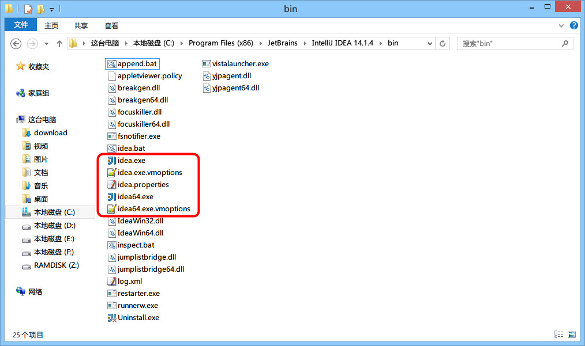
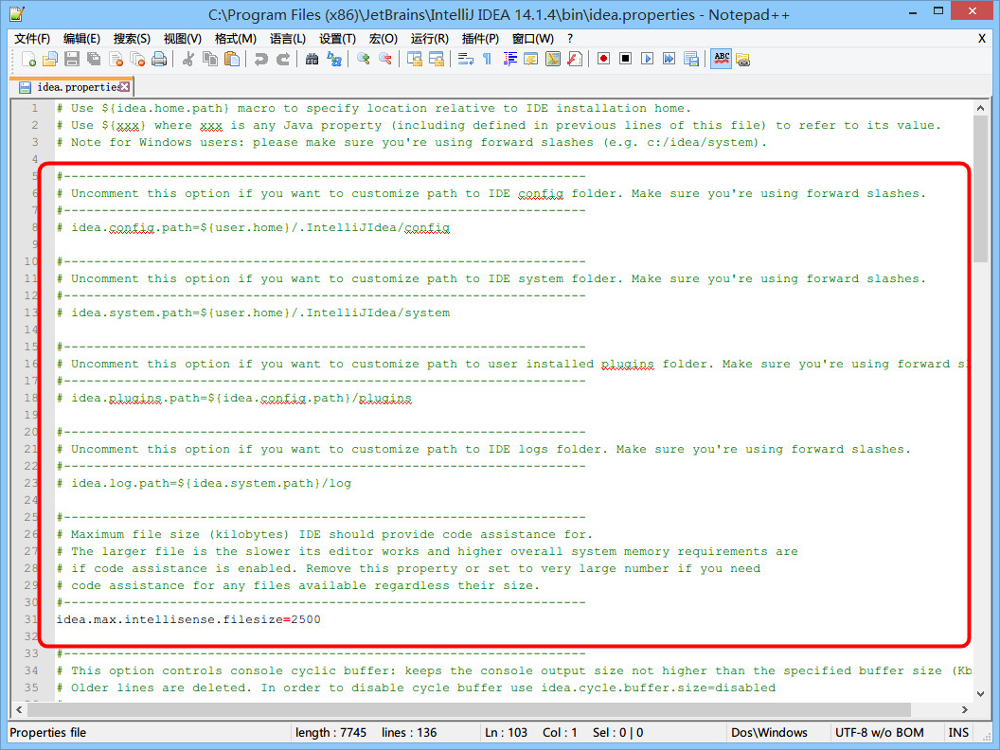

IntelliJ IDEA 相关核心文件和目录介绍
安装目录介绍

- IntelliJ IDEA 的安装目录并不复杂，上图为最常改动的 bin 目录，经常会改动的文件或是必须介绍就是如图红色框中的几个。
-
idea.exe 文件是 IntelliJ IDEA 32 位的可行执行文件，IntelliJ IDEA 安装完默认发送到桌面的也就是这个执行文件的快捷方式。
-
idea.exe.vmoptions 文件是 IntelliJ IDEA 32 位的可执行文件的 VM 配置文件，具体配置修改会下面进行专门讲解。
-
idea64.exe 文件是 IntelliJ IDEA 64 位的可行执行文件，要求必须电脑上装有 JDK 64 位版本。64 位的系统也是建议使用该文件。
-
idea64.exe.vmoptions 文件是 IntelliJ IDEA 64 位的可执行文件的 VM 配置文件，具体配置修改会下面进行专门讲解。
-
idea.properties 文件是 IntelliJ IDEA 的一些属性配置文件，具体配置修改会下面进行专门讲解。
设置目录介绍

- 不管你使用的是哪个操作系统，IntelliJ IDEA 的设置目录命名是统一的、有规律：.IntelliJ IDEA14。其中 14 表示大版本号，如果你电脑上还同时装有 13 的版本，那则还应该会有一个：
.IntelliJ IDEA13 的设置目录，其他版本道理一样。
- 在三大主流的操作系统上，你只要对整个硬盘进行搜索：
.IntelliJ IDEA14，即可找到，无需可以去记忆到底生成在哪个目录下。
- 对于这个设置目录有一个特性，就是你删除掉整个目录之后，重新启动 IntelliJ IDEA 会再自动帮你再生成一个全新的默认配置，所以很多时候如果你把 IntelliJ IDEA 配置改坏了，没关系，删掉该目录，一切都会还原到默认，我是很建议新人可以多自己摸索 IntelliJ IDEA 的配置，多几次还原，有助于加深对 IntelliJ IDEA 的了解。
-
config 目录是 IntelliJ IDEA 个性化化配置目录，或者说是整个 IDE 设置目录。也是我个人认为最重要的目录，没有之一，如果你还记得安装篇的介绍的时候，安装新版本的 IntelliJ IDEA 会自动扫描硬盘上的旧配置目录，指的就是该目录。这个目录主要记录了：IDE 主要配置功能、自定义的代码模板、自定义的文件模板、自定义的快捷键、Project 的 tasks 记录等等个性化的设置。
-
system 目录是 IntelliJ IDEA 系统文件目录，是 IntelliJ IDEA 与开发项目一个桥梁目录，里面主要有：缓存、索引、容器文件输出等等，虽然不是最重要目录，但是也是最不可或缺目录之一。
配置文件常见修改内容说明

- 上图是 64 位可执行文件的 JVM 配置文件内容，如果你是 32 位的系统你应该修改的是
idea.exe.vmoptions 文件里面的内容，但是由于 32 位系统内存一般都是 2G 左右的，所以也没有多大空间可以调整，所以一般无需调整的。
- 修改的原则主要是根据自己机器的内存情况来判断的，我个人是建议 8G 以下的机子或是静态页面开发者都是无需修改的。如果你是开发大型项目、Java 项目或是 Android 项目，并且内存大于 8G，建议进行修改，常修改的就是下面 4 个参数，我这里主要以我的机子会例进行建议，每个人机子情况不一，这里也只是做一个引子，最好的调整方式是你可以根据 jconsole 这类工具进行观察后个性化调整。
-
-Xms128m，16 G 内存的机器可尝试设置为 -Xms512m
-
-Xmx750m，16 G 内存的机器可尝试设置为 -Xmx1500m
-
-XX:MaxPermSize=350m，16G 内存的机器可尝试设置为 -XX:MaxPermSize=500m
-
-XX:ReservedCodeCacheSize=225m，16G 内存的机器可尝试设置为 -XX:ReservedCodeCacheSize=500m

- 上图是 IntelliJ IDEA 一些属性配置，没有 32 位和 64 位之分，修改原则主要根据个人对 IntelliJ IDEA 的个性化配置情况来分析。常修改的就是下面 4 个参数：
-
idea.config.path=${user.home}/.IntelliJIdea/config，该属性主要用于指向 IntelliJ IDEA 的个性化配置目录，默认是被注释，打开注释之后才算启用该属性，这里需要特别注意的是斜杠方向，这里用的是正斜杠。
-
idea.system.path=${user.home}/.IntelliJIdea/system，该属性主要用于指向 IntelliJ IDEA 的系统文件目录，默认是被注释，打开注释之后才算启用该属性，这里需要特别注意的是斜杠方向，这里用的是正斜杠。如果你的项目很多，则该目录会很大，如果你的 C 盘空间不够的时候，还是建议把该目录转移到其他盘符下。
-
idea.max.intellisense.filesize=2500，该属性主要用于提高在编辑大文件时候的代码帮助。IntelliJ IDEA 在编辑大文件的时候还是很容易卡顿的。
-
idea.cycle.buffer.size=1024，该属性主要用于控制控制台输出缓存。有遇到一些项目开启很多输出，控制台很快就被刷满了没办法再自动输出后面内容，这种项目建议增大该值或是直接禁用掉，禁用语句 idea.cycle.buffer.size=disabled。
设置目录进行多台设置同步化处理

- 上图是我的个性化配置目录，我是存放在 F 盘，同时该目录也是在 360 同步盘中。这样做主要是为了让我的多台设置可以同时使用一个个性化配置，保证个人开发习惯，额外作用就是在服务器上一个备份作用。
- 设置方式很简单，修改
idea.properties 属性文件中的 idea.config.path 值，我的机器为：idea.config.path=F:/360SycDir/idea_config/config